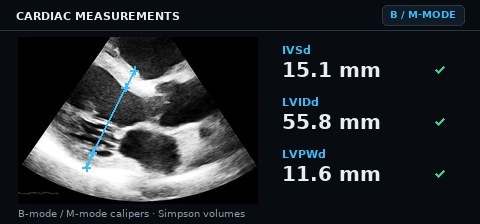
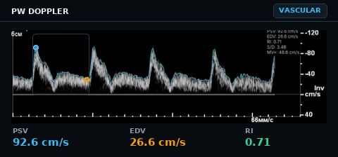
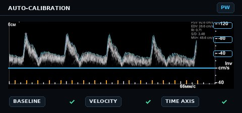
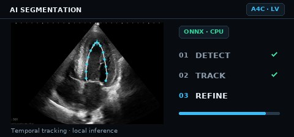
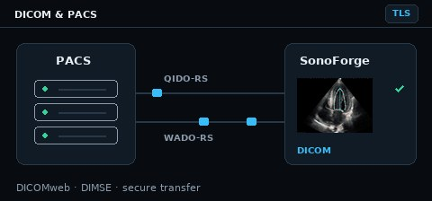

Open source · GPL-3.0 · Windows, Linux, macOSОткрытый код · GPL-3.0 · Windows, Linux, macOS
Echocardiography analysis on your desktop. Offline, open, ASE-aligned.Анализ эхокардиографии на вашем компьютере. Офлайн, открыто, по рекомендациям ASE.
SonoForge is a free desktop application for echo analysis: DICOM viewer, cardiac and Doppler measurements, AI segmentation, PACS connectivity and clinical PDF reports — built for cardiologists, sonographers and researchers.SonoForge — бесплатное десктопное приложение для анализа эхокардиографических исследований: просмотр DICOM, кардиологические и допплеровские измерения, AI‑сегментация, подключение к PACS и клинические PDF‑отчёты — для кардиологов, сонографов и исследователей.
ASEreference norms built inреференсные нормы встроены
DICOMweb + DIMSEPACS connectivity with TLSподключение к PACS с TLS
MP4 · JPEGopen videos and still images alongside DICOMпросмотр видео и изображений наряду с DICOM
.dcm · MP4 · JPEGsave DICOM copies, export clips and snapshots for colleagues and presentationsсохранение копий DICOM, экспорт видео и снимков для обмена с коллегами и демонстраций
Sharing on social media? Remove patient-identifying information first.Перед публикацией в соцсетях удалите данные, позволяющие идентифицировать пациента.
Auto EFSimpson biplaneбиплан Симпсона
A4C30 fps · ONNX30 к/с · ONNX
Main application: LV auto-EF workflow on an A4C cine.Основное приложение: авто‑ФВ ЛЖ на cine‑петле A4C.
DICOMweb · QIDO‑RS · WADO‑RS · STOW‑RS
DIMSE C‑FIND · C‑GET · C‑MOVE
Orthanc · DCM4CHEE · Conquest
EchoNet‑Dynamic
ONNX Runtime · CPU inference
ASE reference norms
DICOM SR · PDF reports
PySide6 · Qt
pyqtgraph
pydicom · pynetdicom
OpenCV · NumPy · SciPy
GPL‑3.0 · offline by design
DICOMweb · QIDO‑RS · WADO‑RS · STOW‑RS
DIMSE C‑FIND · C‑GET · C‑MOVE
Orthanc · DCM4CHEE · Conquest
EchoNet‑Dynamic
ONNX Runtime · CPU inference
ASE reference norms
DICOM SR · PDF reports
PySide6 · Qt
pyqtgraph
pydicom · pynetdicom
OpenCV · NumPy · SciPy
GPL‑3.0 · offline by design
What's insideЧто внутри
From a caliper to a signed-off reportОт калипера до готового отчёта
A complete echo workstation toolset — from basic linear measurements to AI-assisted segmentation — with every value indexed, referenced and exportable.Полный набор инструментов эхо‑рабочей станции — от базовых линейных измерений до AI‑сегментации; каждое значение индексируется, сверяется с нормами и экспортируется.
Cardiac measurementsКардиологические измерения
Linear B‑mode/M‑mode calipers with live labels, Simpson biplane volumes with open‑arc mitral annulus tracking, RV function, LV mass and RWT, automatic BSA indexing and HR from the ECG trace.
Линейные калиперы B/M‑режима с подписями в реальном времени, объёмы по биплановому Симпсону с открытой дугой митрального кольца, функция ПЖ, масса ЛЖ и ОТС, автоматическая индексация по ППТ и ЧСС по ЭКГ.
LVEDD · IVSd · LVPWd
EDV · ESV · LVEF
LAVi · RAVi
TAPSE · FAC
LVM · LVMI · RWT

Doppler & vascularДопплер и сосуды
PSV/EDV peaks with automatic RI and S/D, a caliper that measures Δt and velocity inside the Doppler ROI, two‑click auto‑VTI, vessel stenosis by diameter and area, cycle averaging without ECG and study‑wide E/e′.
Пики PSV/EDV с автоматическими RI и S/D, калипер, измеряющий Δt и скорость внутри допплеровской зоны, авто‑VTI в два клика, стеноз сосуда по диаметру и площади, усреднение по циклам без ЭКГ и сквозное E/e′ по исследованию.
PSV · EDV · RI · S/D
Auto VTI
%D · %S
E/e′

Doppler auto‑calibrationАвтокалибровка допплера
Velocity scale from ruler ticks with grid‑line fallback, sweep‑speed calibration, evidence‑fusion baseline detection for Samsung and GE systems, and a manual two‑click wizard that always wins over auto‑detection.
Шкала скоростей по тикам линейки с fallback на сетку, калибровка скорости развёртки, многометодное определение базовой линии для Samsung и GE и ручной мастер в два клика, который всегда имеет приоритет над автоматикой.
Samsung RS85
GE
DICOM tags
DICOM‑теги

AI segmentationAI‑сегментацияFull profileПолный профиль
ONNX Runtime on the CPU: automatic LV contouring in A4C with EchoNet‑Dynamic, LA segmentation with optical‑flow assist, mitral annulus detection, temporal fusion across neighbouring frames and edge‑snapping contour refinement.
ONNX Runtime на CPU: автоконтур ЛЖ в A4C по модели EchoNet‑Dynamic, сегментация ЛП с оптическим потоком, определение митрального кольца, сглаживание по соседним кадрам и доработка контура с привязкой к границам.
EchoNet‑Dynamic
ONNX
SHA‑256 verified models
SHA‑256‑контроль моделей

DICOM & PACSDICOM и PACS
DICOMweb (QIDO‑RS, WADO‑RS, STOW‑RS) and classic DIMSE — C‑FIND, C‑GET, C‑MOVE with an embedded Storage SCP, C‑STORE — with TLS and certificate validation. Works with Orthanc, DCM4CHEE, Conquest and any compliant server.
DICOMweb (QIDO‑RS, WADO‑RS, STOW‑RS) и классический DIMSE — C‑FIND, C‑GET, C‑MOVE со встроенным Storage SCP, C‑STORE — с TLS и проверкой сертификатов. Работает с Orthanc, DCM4CHEE, Conquest и любым совместимым сервером.
DICOMweb
DIMSE
TLS
Orthanc

Reports & reference normsОтчёты и референсные нормы
Study summary with indexed values, clinical‑grade PDF export with reference ranges, built‑in age‑ and sex‑specific ASE tables, and DICOM SR‑compatible structured output back to PACS.
Сводка по исследованию с индексированными значениями, PDF‑отчёты с референсными диапазонами, встроенные таблицы ASE по полу и возрасту и структурированный вывод в формате DICOM SR обратно в PACS.
Build your own library of guideline tables, nomograms, checklists and PDFs: import from Excel or YAML, edit inline, search instantly in the web‑based viewer and export as PDF/HTML for colleagues.
Собственная библиотека таблиц норм, номограмм, чек‑листов и PDF: импорт из Excel или YAML, правка прямо в таблице, мгновенный поиск в веб‑справочнике и экспорт в PDF/HTML для коллег.
Excel · YAML
Web viewer
Веб‑справочник
Vascular · thyroid · kidney
Сосуды · щитовидная · почки
Privacy by designКонфиденциальность по умолчанию
All DICOM data is processed in memory — no PHI is written to disk, no cloud uploads, no telemetry. File and UID validation before parsing, network timeouts, and patient identifiers truncated in logs.
Все DICOM‑данные обрабатываются в оперативной памяти — персональные данные не пишутся на диск, нет облака и телеметрии. Проверка файлов и UID до парсинга, сетевые таймауты, идентификаторы пациентов обрезаются в логах.
Offline
Офлайн
No PHI on disk
Без PHI на диске
SECURITY.md
Workstation UXИнтерфейс рабочей станции
Dark clinical theme, dual viewer for side‑by‑side phases, thumbnail gallery, smooth cine playback with adaptive frame cache, window/level, crosshair, full keyboard workflow and live English/Russian switching.
Тёмная клиническая тема, двойной просмотрщик для сравнения фаз, галерея миниатюр, плавное cine‑воспроизведение с адаптивным кэшем кадров, окно/уровень, перекрестие, полная работа с клавиатуры и переключение EN/RU на лету.
Dual viewer
Двойной просмотр
Cine
EN / RU
In the viewerВ просмотрщике
ScreenshotsСкриншоты
Click any image to open it full size.Нажмите на изображение, чтобы открыть его в полном размере.
SonoForge Presenter — DICOM as a presentationDICOM как презентация
For lectures and case review: the audience sees a clean full‑screen echo while you keep the full measuring workstation on your laptop — like a slide show, but with live DICOM.Для лекций и разборов случаев: аудитория видит чистый полноэкранный эхо‑кадр, а у вас на ноутбуке — полная рабочая станция с измерениями. Как показ слайдов, только вместо слайдов — живой DICOM.
Your workstation, their clean screen. The audience display shows only the image, full screen — you keep every tool.У вас — рабочая станция, у аудитории — чистый экран. Второй дисплей показывает только изображение во весь экран — все инструменты остаются у вас.
Everything mirrors live — contours, node edits, calipers, Doppler/VTI, vessel PSV/EDV, the results overlay.Всё зеркалится в реальном времени — контуры, правка узлов, калиперы, допплер/VTI, сосудистые PSV/EDV, оверлей результатов.
Presenter extras — audience‑display picker, laser pointer, projector visual preset with thick lines and large labels.Фишки докладчика — выбор дисплея аудитории, лазерная указка, визуальный профиль проектора с толстыми линиями и крупными подписями.
Runs from a USB stick — one file, no installation, no admin rights, nothing written to the host outside the temp directory. Windows and Linux.Запускается с флешки — один файл, без установки и прав администратора, на хост ничего не пишется вне временного каталога. Windows и Linux.
Strain/STE and optical flowStrain/STE и оптический поток
✓
✓
PACS: DICOMweb + DIMSE, TLS
✓
✓
PDF reports with ASE normsPDF‑отчёты с нормами ASE
✓
✓
AI (ONNX) segmentationAI‑сегментация (ONNX)
✓
excluded from the buildисключена из сборки
Reference Constructor / web handbookКонструктор справочника / веб‑справочник
✓
excluded from the buildисключён из сборки
Settings and secretsНастройки и секреты
OS keychain + QSettingsсистемная связка ключей + QSettings
on the stick: INI + Fernet‑encrypted secretsна флешке: INI + секреты, зашифрованные Fernet
Get SonoForgeУстановка
Download & installСкачать и установить
Latest release: v0.3.1 . Free, GPL‑3.0. First run creates its environment automatically and offers to download the AI models.Текущий релиз: v0.3.1 . Бесплатно, GPL‑3.0. При первом запуске окружение настраивается автоматически, AI‑модели предлагается скачать отдельно.
Linux (.deb) RecommendedРекомендуется
Debian/Ubuntu package. Installs the sonoforge launcher; the first run creates a virtual environment, installs Python dependencies and optionally downloads the AI segmentation models.
Пакет для Debian/Ubuntu. Устанавливает лаунчер sonoforge; при первом запуске создаётся виртуальное окружение, ставятся Python‑зависимости и (по желанию) скачиваются AI‑модели.
Download the Windows build, run it and follow the prompts; SonoForge sets up its environment on first launch. Start it from the Start menu or desktop shortcut afterwards.
Скачайте сборку для Windows, запустите и следуйте подсказкам; окружение настраивается при первом запуске. Дальше — из меню «Пуск» или ярлыка на рабочем столе.
Windows SmartScreen may warn about an unsigned application — this is expected for an open‑source build. Verify the download against the checksums on the release page if in doubt.
Windows SmartScreen может предупредить о неподписанном приложении — для open‑source‑сборки это ожидаемо. При сомнениях сверьте файл с контрольными суммами на странице релиза.
macOS 12.0+ Apple Silicon
Open the disk image and drag SonoForge.app to Applications. First run creates the virtual environment, installs dependencies and optionally downloads the AI models.
Откройте образ диска и перетащите SonoForge.app в «Программы». При первом запуске создаётся виртуальное окружение, ставятся зависимости и (по желанию) скачиваются AI‑модели.
If macOS blocks the first launch (“unidentified developer”), right‑click the app → Open once, or allow it in System Settings → Privacy & Security.
Если macOS блокирует первый запуск («неустановленный разработчик»), нажмите на приложение правой кнопкой → Открыть один раз или разрешите его в Системные настройки → Конфиденциальность и безопасность.
SonoForge Presenter — portableпортативный
A single file for the USB stick: copy, double‑click, present. Settings, PACS profiles, encrypted passwords and the DICOM cache live next to the executable. All measurement tools and PACS connectivity included; AI segmentation and the Reference Constructor are not part of this edition.
Один файл на флешке: скопировали, дважды щёлкнули, докладываете. Настройки, профили PACS, зашифрованные пароли и кэш DICOM лежат рядом с исполняемым файлом. Все инструменты измерений и PACS включены; AI‑сегментация и Конструктор справочника в это издание не входят.
git clone https://github.com/areatu/SonoForge.git
cd SonoForge
# with uv (recommended)
uv sync --extra dev
uv run sonoforge
# or with pip
pip install -e ".[dev]"
python -m echo_personal_tool
File → Open Folder for a directory of DICOM, MP4 or JPEG files, or File → Load from Server to browse a PACS (Orthanc, DICOMweb, DIMSE).
Файл → Открыть папку для каталога с DICOM, MP4 или JPEG, либо Файл → Загрузить с сервера, чтобы открыть PACS (Orthanc, DICOMweb, DIMSE).
NavigateНавигация
Pick a series in the gallery, scroll frames with the mouse wheel or arrow keys, play the cine loop with Space.
Выберите серию в галерее, листайте кадры колёсиком или стрелками, запускайте cine‑петлю клавишей Space.
MeasureИзмеряйте
L linear caliper (stays armed for Dist1, Dist2, …; measures Δt and velocity inside a Doppler ROI) · C Simpson biplane · M M‑mode · I LV auto‑contour · R refine contour.
L линейный калипер (остаётся активным: Dist1, Dist2, …; в зоне допплера измеряет Δt и скорость) · C Simpson биплан · M M‑режим · I автоконтур ЛЖ · R доработка контура.
Review and exportПроверьте и экспортируйте
The results panel shows every value indexed to BSA and checked against age/sex reference ranges. Export a PDF report or store a DICOM SR back to PACS.
Панель результатов показывает все значения с индексацией по ППТ и сверкой с нормами по полу и возрасту. Экспортируйте PDF‑отчёт или сохраните DICOM SR обратно в PACS.
If SonoForge helped your research or teaching, please cite it using the all-versions DOI below. It links to the latest release archived on Zenodo.Если SonoForge пригодился в исследовании или преподавании, пожалуйста, сошлитесь на него, используя общий DOI для всех версий. Он ведёт к актуальному релизу на Zenodo.